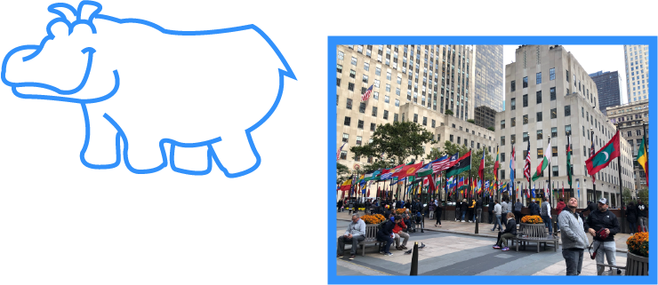
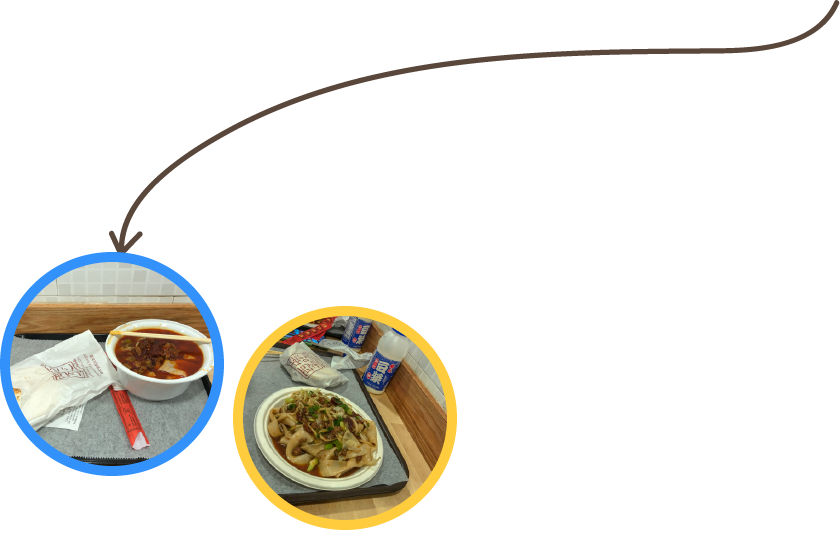
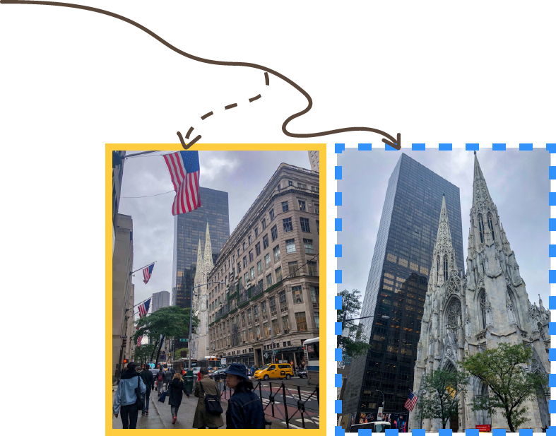
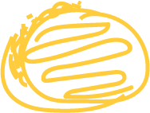
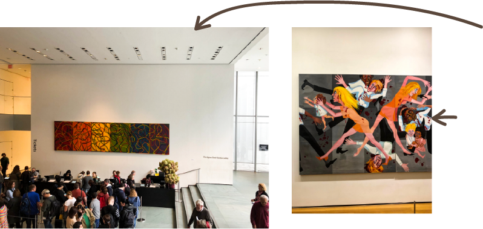
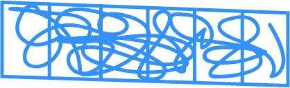
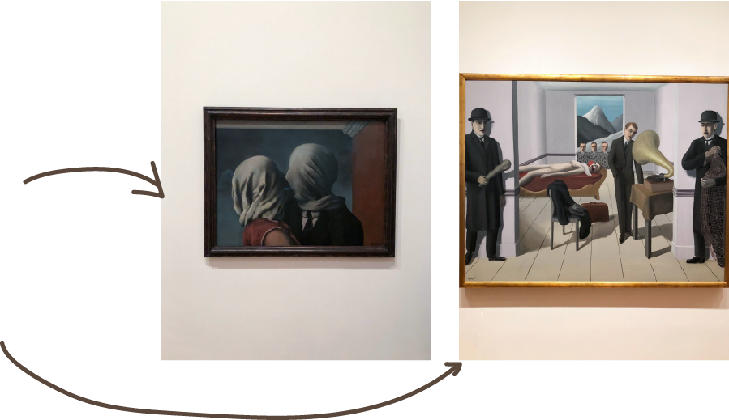
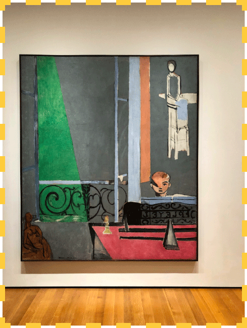
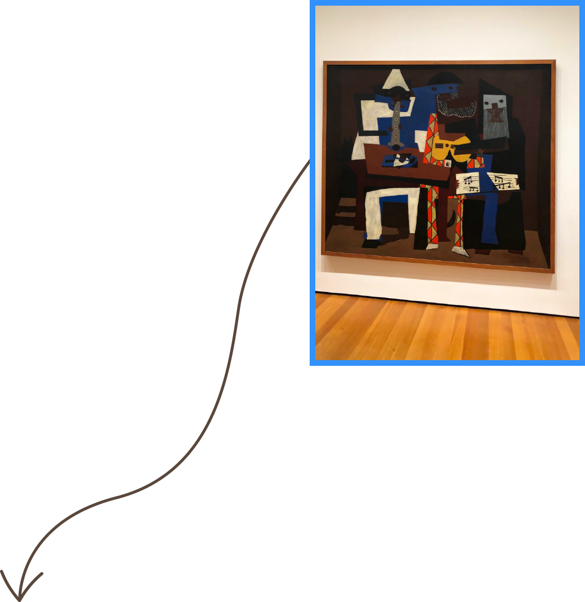
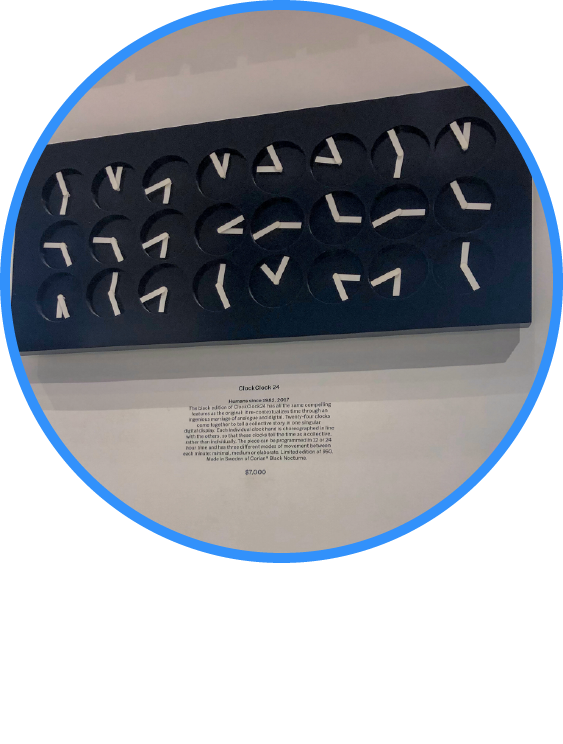

9.00 a.m.
Airbnb in Manhattan

10.00 a.m.
Saw a Party Rantal Van on the Street

10.30 a.m.
Pass the Rockefeller Plaza

11.00 a.m.
Had Brunch at a Chinese Restaurant
During this trip, a friend of mine is from Xi’an City in Shanxi Province, the food in there is really famous in China. We found a restaurant called “Xi’an Famous Food”that sells some �traditional Xi’an food, so we decided to have brunch there.
At around 11.00 in the morning, we arrived there, it located near the 5th ave. We ordered the spicy pork Chinese burgers, �noddles with lamb or beef and bottles of soybean milk. I have to say they are not good as I tasted in China, but it’s still memorable, as this meal reminded me about China and Chinese food.


12.00 a.m.
Pass the St.Patrick’s Cathedral on 5th Ave


1.00 p.m.
at The Entrance of MOMA Gallery
1.30 p.m.
American People Series #20: Die
by Faith Ringgold, 1967

2.00 p.m.
The Lovers
by René Magritte, 1928
The Menaced Assassin
by René Magritte, 1927

3.00 p.m.
The Piano Lesson by Henri Matisse

4.00 p.m.
Three Musicians by Pablo Picasso

5.00 p.m.
Shopped at MOMA Design Store
At 5 pm, I ended the tour of MOMA. In my opinion, it is absolutely necessary for an art student to spend a few hours to visit an art museum. No matter which major you are studying, you can find references and inspiration here. I personally like the style of Matisse and Picasso. I usually incorporate abstract visual elements in my graphic design work. Mondrian is also my inspiration, I really like the way that he used shapes and colors. Take a close look at these paintings, you can feel the charm of the art works, which can’t be felt from the electronic pictures online.